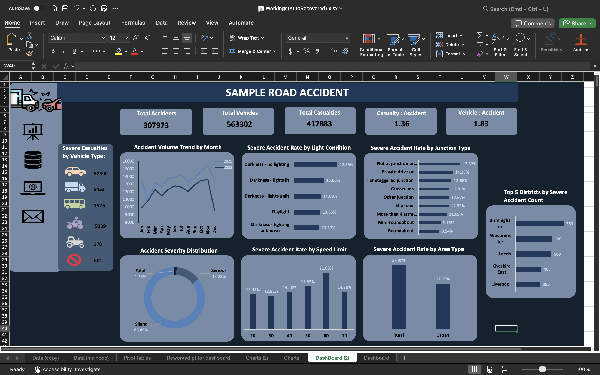

Road Safety Risk Analysis
An Excel-based analysis of UK road accident records to identify factors associated with severe accident outcomes.

1. Executive Summary
This project analysed 307,973 UK road accident records to identify road and environmental factors associated with severe accident outcomes. Using Microsoft Excel, I explored accident severity across speed limits, lighting conditions, urban and rural areas, junction environments, weather conditions, road surface conditions, and local authority districts.
To support decision-making, I developed a Severe Accident Rate metric by combining fatal and serious accident percentages. The analysis showed that 60 mph roads, rural roads, darkness without street lighting, and accidents occurring away from junctions were associated with higher severe accident rates.
2. Business Problem
Road safety authorities and local councils need to allocate limited resources effectively to reduce road fatalities and serious injuries. Accident volume alone does not always reveal where the most harmful outcomes occur. This project therefore focused on identifying the conditions associated with higher accident severity.
3. Dataset
The dataset contained 307,973 accident records covering 2021 and 2022. Key variables included accident severity, speed limit, light conditions, urban/rural area, junction detail, number of casualties, number of vehicles, and local authority district.
The dashboard summary metrics included 307,973 total accidents, 417,883 casualties, and 563,302 vehicles involved.
4. Data Preparation
The dataset was reviewed for missing values, duplicate issues, and category consistency. One issue identified was inconsistent formatting in the Accident Severity column, where “fatal” appeared in lowercase while the other categories used proper case. This was standardised using Excel’s PROPER function.
Additional derived metrics were created, including casualties per accident, vehicles per accident, and Severe Accident Rate.
5. Methodology
The analysis was conducted entirely in Microsoft Excel using pivot tables, pivot charts, custom summary tables, descriptive analysis, and dashboard design techniques.
Severity categories were converted into row percentages to allow fair comparison between categories with different accident volumes.
Severe Accident Rate = Fatal % + Serious %
6. Exploratory Data Analysis
Several variables were explored, including weather conditions, road surface conditions, road type, carriageway hazards, junction control, junction detail, speed limits, light conditions, and urban/rural area.
Weather, road surface, road type, and carriageway hazards were explored but were not selected as primary dashboard findings because they showed weaker combinations of severity, accident volume, and practical road-safety relevance.
7. Key Findings
Rural accidents were more severe than urban accidents
Rural roads recorded a Severe Accident Rate of 17.89%, compared with 12.65% for urban roads.
60 mph roads had the highest severe accident rate
Among major speed-limit categories, 60 mph roads recorded the highest Severe Accident Rate at 21.63%.
Poor lighting was associated with higher severity
Accidents occurring in darkness without street lighting recorded a Severe Accident Rate of 22.55%, higher than both daylight and lit-darkness conditions.
Junction environment influenced severity
Accidents occurring away from junctions showed higher severity rates, while roundabouts recorded comparatively lower severe accident rates.
Severe accident burden was concentrated in specific districts
Local authority analysis showed that severe accident counts were concentrated in a small number of districts, including Birmingham, Leeds, Westminster, Bradford, and Manchester.
8. Business Impact
The findings can help road safety stakeholders prioritise interventions in higher-risk environments. Potential actions include improving road lighting, reviewing speed management on high-risk roads, targeting rural road safety initiatives, and focusing local interventions in districts with high severe accident burden.
9. Lessons Learned
This project reinforced the importance of distinguishing between risk and burden. Some categories had high severity rates but low accident volumes, while others contributed more severe accidents overall because of their scale.
It also highlighted that dashboard design requires prioritisation. Not every variable explored during analysis should appear on the final dashboard; the strongest visuals are those that support clear decision-making.